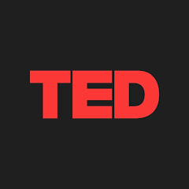

Nuevas Tecnologías en Educación Musical
Actividad 2
Investigación
App e icono
Aunque es posible acceder a los contenidos de Wikipedia usando simplemente un navegador, el uso de la aplicación nativa para móvil o tablet proporciona funcionalidades extra y una mejor, más adaptable y rápida visualización entre otras funcionalidades. En Wikipedia los alumnos podrán consultar las bases de la tecnología musical y tener una idea más concreta y profunda de las explicaciones que se hayan realizado previamente en clase, además de servir de base para la captura de los contenidos que servirán para realizar su resumen en forma de presentación interactiva en la última fase de la actividad.



Si bien es cierto que YouTube es la aplicación en la que todos pensamos cuando nos referimos a la exploración de contenidos en formato video, TED, a través de sus muy diversas TED Talks proporciona una base de datos inmensa de videos extremadamente interesantes y condensados de gran variedad de temáticas, incluyendo la que nos concierne que puede ayudar tanto a continuar profundizando en los conocimientos de los alumnos sobre el tema como para motivar sus aprendizajes debido a lo bien estructuradas que están dichas charlas y su reducida duración; diseñadas para atraer, interesar y encender la chispa que lleve al que las visualice a investigar y profundizar más acerca de los temas que tratan.


Descripción de la actividad
En esta segunda actividad, un pequeño ejemplo de "app smashing" se pedirá a los alumnos que profundicen en los contenidos iniciados en la primera sesión realizando una investigación a través de las apps propuestas (u otras) realizando finalmente una presentación final en la que sus descubrimientos puedan ser expuestos ante el resto de compañeros de manera visual y atractiva ya sea en forma de presentación o video mediante Canva. Para ellos se sugerirá repartir entre grupos los diferentes periodos históricos de la tecnología musical para evitar repeticiones y realizar un aprendizaje colaborativo y grupal en el momento de las exposiciones finales.
Requisitos
- Acceso a internet a través de un dispositivo móvil u ordenador.
- Cuenta educativa en Canva. com
- Descarga de las aplicaciones propuestas o acceso online.
Obra publicada con Licencia Creative Commons Reconocimiento Compartir igual 4.0